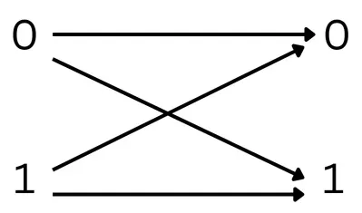
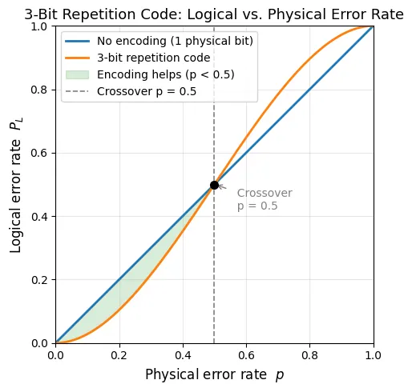

Classical Error Correction
Error correction is everywhere. It's why your music doesn't skip when a CD gets scratched, why data survives a noisy Wi-Fi connection, and why spacecraft launched decades ago can still beam back reliable readings from the edge of the solar system. Whenever information is stored or transmitted through an imperfect medium, some mechanism is always needed to protect it. Understanding how that works classically is the essential first step before we can appreciate why the quantum case is so much harder.
A Simple Model of Noise
Let's start with the simplest possible scenario. You have a single bit of information, initialised to 0. Over some time \(t\), the bit is exposed to noise: it has a probability \(p\) of flipping its state, and a probability \(1 - p\) of remaining unchanged. We call \(p\) the physical error rate.

\[ \Pr[\text{bit flips}] = p, \qquad \Pr[\text{no flip}] = 1 - p \]If we do nothing, the probability of receiving an error is simply \(p\). For many real-world applications such as storing data on a hard drive or sending a signal across a cable, a small \(p\) is unacceptable. We need a way to reduce the effective error rate below \(p\), ideally by a large margin.
The Repetition Code
The most intuitive solution is redundancy: store the same information multiple times, so that a single error can be caught and outvoted. This idea is formalised as the repetition code, and it works in four steps.
- Encode. Map the single bit to multiple physical bits. For instance, if we want to store a single bit, we can represent it using three physical bits: \[0 \;\to\; 000, \qquad 1 \;\to\; 111\] The three-bit string is called the codeword; the bit it represents is called the logical bit.
- Transmission through the noise channel. Each of the three physical bits independently has a probability \(p\) of flipping.
- Error detection. After storage, compare the three bits against each other. Any disagreement signals that an error has occurred somewhere.
- Error correction. Apply a majority vote: whichever value appears at least twice is taken to be the correct logical bit.
The majority vote succeeds whenever at most one bit flips, and fails when two or more bits flip. A logical error therefore occurs only when two or more of the three physical bits are corrupted.
The Probability of Failure
The probability that two or more errors occur out of three independent bits, each with error rate \(p\), is:
\[ P_{\text{fail}} = \binom{3}{2} p^2 (1-p) + \binom{3}{3} p^3 = 3p^2(1-p) + p^3 \]Compare this to the unprotected error rate of \(p\). The repetition code is an improvement whenever \(P_{\text{fail}} < p\):
\[ 3p^2(1-p) + p^3 < p \;\implies\; p < \frac{1}{2} \]
So, as long as the physical error rate is below 50%, the 3-bit repetition code gives us a lower logical error rate than doing nothing.
Code Distance
Notice that in our example, when three bit errors occur, the codeword \(000\) changes into another valid codeword \(111\). In this instance, there is no way of knowing that an error occurred.
The key parameter here is the code distance \(d\) — the minimum number of bit flips needed to turn one valid codeword into another. For the \(n\)-bit repetition code, \(d = n\). A code of distance \(d\) can correct up to
\[ t = \left\lfloor \frac{d - 1}{2} \right\rfloor \]errors. This is an important concept to hold onto. As we move into quantum codes, code distance will be one of the central figures of merit, and we'll spend considerable effort designing codes with large \(d\) using as few physical qubits as possible.
What Comes Next
We've seen that classical error correction works by adding redundancy and using majority voting. Simple, effective, and intuitive. Now the natural question is: can we do the same thing for quantum information?
The answer is yes, but it requires confronting some fundamental obstacles. Quantum states can't be copied (the no-cloning theorem), measuring a quantum state disturbs it, and errors don't just come in one flavour: qubits can suffer both bit flips and phase flips. Phase flip errors are fundamentally different with no classical analogue.
In the next article, we'll explore exactly these challenges and see how quantum mechanics forces us to rethink error correction from the ground up.